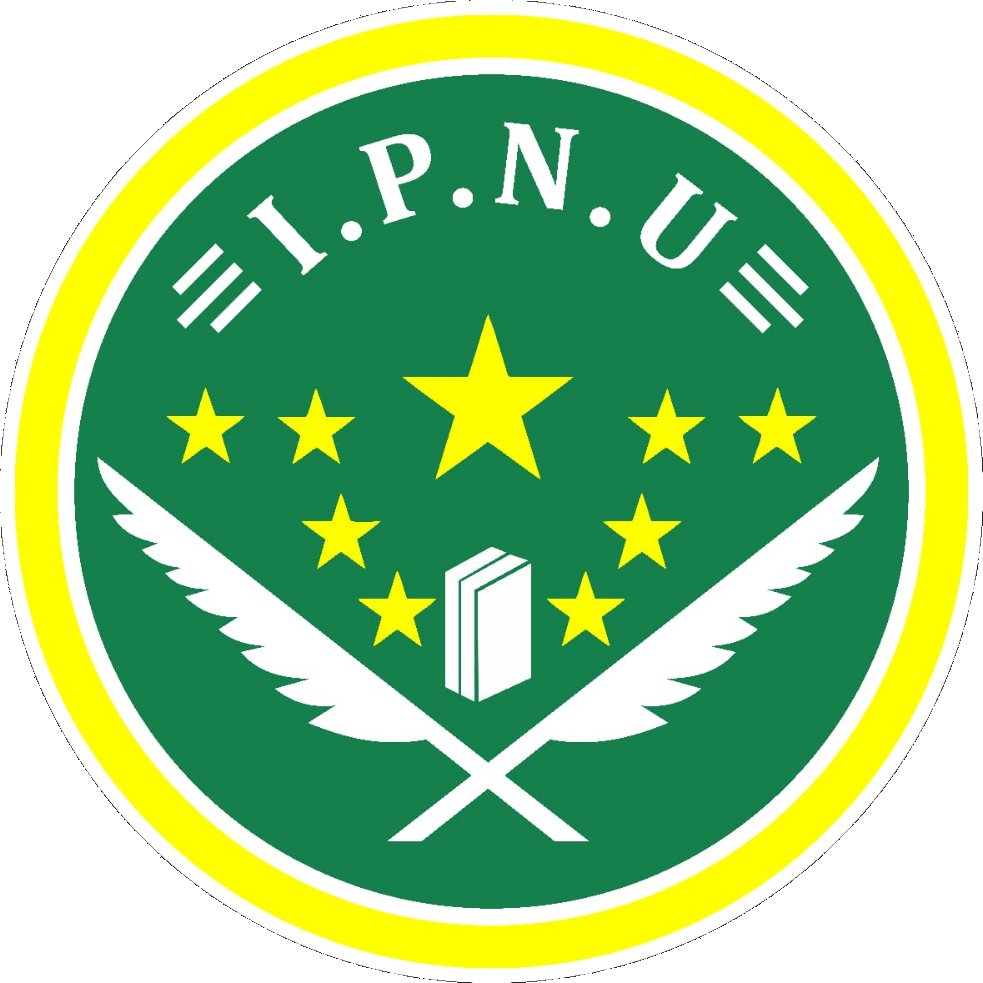
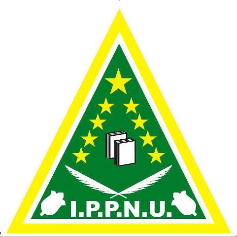

PKPT IPNU IPPNU UNU Cirebon
Erika Riani, 09 November 2023
|  |  |
PKPT adalah singkatan dari (Pimpinan Komisariat Perguruan Tinggi) merupakan wadah bagi IPNU IPPNU di ranah Perguruan Tinggi yang disahkan pada saat KONGRES PP IPNU IPPNU pada tahun 2015 di Boyolali, Jawa tengah sebagai tempat untuk mencetak kader–kader penggerak yang berintegritas serta mampu menjadi motor untuk memperkuat dakwah Islam Nusantara dan Aswaja di lingkungan Kampus. PKPT IPNU IPPNU UNU Cirebon sendiri dibentuk dan disahkan pada tanggal 14 Desember 2016 setelah dilaksanakannya pelantikan yang bertempat di gedung Islamic Center At-Taqwa Kota Cirebon yang dihadiri langsung oleh Rois Suriah PCNU Kota Cirebon Dr. KH. Syamsudin beserta seluruh jajaran kepengurusan PC IPNU-IPPNU Kota Cirebon. PKPT IPNU-IPPNU diharapkan mampu menjadi benteng dan memperkuat dakwah Islam Nusantara yang berakidah kan Ahlussunnah Wal Jamaah An-Nahdliyah dalam lingkungan kampus. Gerakan PKPT terdapat dua (2) fokus utama yang pertama adalah Gerakan Tri Dharma Perguruan Tinggi dan Gerakan Media Sosial.